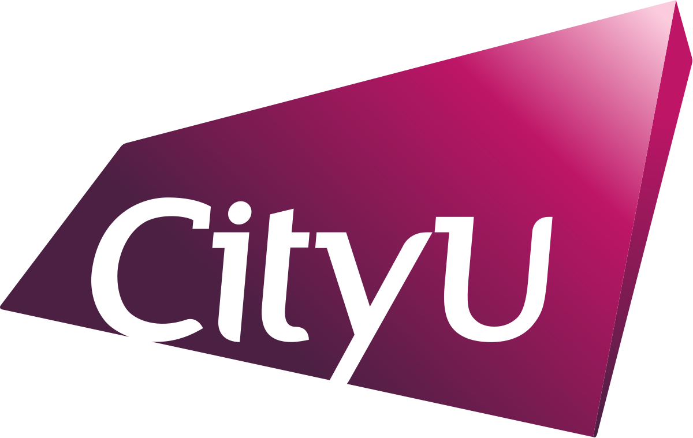

Our Experience with Different Input Methods
By CS1102-Group8
| Name |
SID |
| AN Ziyue |
56644771 |
| CAO Ziyan |
56644906 |
| LIN Zerong |
56633990 |
| YANG Keyan |
57127046 |
When it comes to typing in Chinese or English, there are many different input methods to choose from. We've divided them into three main categories (You can click on the name of each input method to see the details):
Input Methods
- Chinese Input Method
- Functional Classification
- Pinyin-based Input Method
- Character-based Input Method
- Common Input Method of Simplified and Traditional Chinese Characters
- Simplified Chinese Common Input Method
- Traditional Chinese Common Input Method
- English Input Method
- Voice Input Method
Based on our one-month research and experience, we come to the following conclusions:
What about you? Have you tried any of these input methods? Which one do you prefer?
Choose Your Preferred Input Method: